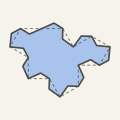

A pre-print by David Ryan. Draft 2, 2026‑09‑25.
Smith, Myers, Kaplan and Goodman-Strauss showed that the equilateral polygon Tile(1, 1) is a weakly chiral aperiodic monotile, and that replacing its edges by suitable smooth curves gives the Spectres: shapes that tile the plane, but only non-periodically and only with copies of one handedness, even when reflected copies are allowed. They left open whether piecewise-linear edge paths might permit other tilings. Goucher gave a short argument that one equilateral 28-edge polygon is a Spectre. We extend this to a two-parameter family. Replace each edge of Tile(1, 1) by a triangular bump or dent, alternating around the tile. The result is a polygon with 27 sides. It is a Spectre for every position of the triangle's peak along the edge and every height below an explicit bound. The family contains Goucher's polygon. In general the sides of our polygons have two lengths, so a corner of one tile could lie inside a side of another. The proof follows Goucher's plan, and is elementary apart from a short computer search for one pair of tiles. Angle sums and side lengths show that the corners of Tile(1, 1) with angles 2π/3 and 4π/3 meet only each other. This pairs every bump with a dent, and every tiling by the polygon then straightens into a tiling by unreflected copies of Tile(1, 1).
Each draft keeps its own address, and the newest is listed first. drbuild.uk/papers/polygonal-spectre.pdf always holds the newest draft.
| Draft | Date | Changes |
|---|---|---|
| Draft 2 | 2026‑09‑25 | Credits Goucher's 2023 proof for one such polygon, and extends it to every height below the bound with no exceptions |
| Draft 1 | 2026‑09‑25 | First version. Its claim to the first proof that a polygon can be a Spectre was wrong |